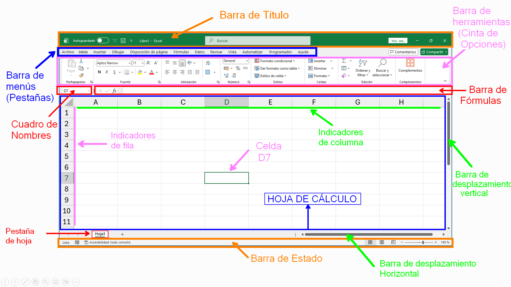

Introducción a Microsoft Excel
Concepto - Entorno de trabajo - partes de la ventana.
Resumen de la Clase
El sábado 17 de enero de 2026 se da inicio al módulo de Excel para dar una introducción a Microsoft Excel.
Temas Cubiertos:
1. ¿Qué es Excel?
Es una aplicación de hoja de cálculo que permite gestionar y calcular datos numéricos y alfanuméricos. Es la herramienta estándar para el procesamiento de datos mediante el uso de fórmulas, funciones, herramientas de análisis y gráficos.
Usos principales:
- Cálculo matemático.
- Organización de la información.
- Análisis de datos.
- Visualización de datos mediante gráficos.
- Reportes y consolidaciones de datos.
2. Ventana Principal de Excel
Excel organiza las opciones y herramientas en distintas partes que a continuación se muestra en la imagen:
Partes de la Ventana Principal de Excel
- Barra de Título: Muestra el nombre del libro de trabajo actual y el nombre del programa.
- Barra de menús (Pestañas): Contiene las diferentes pestañas (Archivo, Inicio, Insertar, etc.) que agrupan las funciones de Excel.
- Barra de herramientas (Cinta de Opciones): Conjunto de botones y herramientas que permiten realizar tareas específicas según la pestaña o menú seleccionado.
- Cuadro de Nombres: Muestra la referencia o dirección de la celda activa (por ejemplo, D7).
- Barra de Fórmulas: Espacio donde se puede introducir, ver o editar el contenido (texto, números o fórmulas) de una celda.
- Indicadores de columna: Son las letras (A, B, C...) que identifican de forma vertical las columnas de la hoja.
- Indicadores de fila: Son los números (1, 2, 3...) que identifican de forma horizontal las filas de la hoja.
- Celda (D7): Es la intersección entre una columna y una fila; es la unidad básica donde se insertan los datos.
- Hoja de Cálculo: Es el área de trabajo principal compuesta por la cuadrícula de celdas.
- Pestaña de hoja: Permite cambiar rápidamente entre las diferentes hojas que componen un mismo archivo o libro.
- Barra de desplazamiento vertical: Permite mover la vista de la hoja hacia arriba o hacia abajo.
- Barra de desplazamiento horizontal: Permite mover la vista de la hoja hacia la izquierda o hacia la derecha.
- Barra de Estado: Muestra información sobre el estado del programa, el zoom y los diferentes tipos de vista del documento.